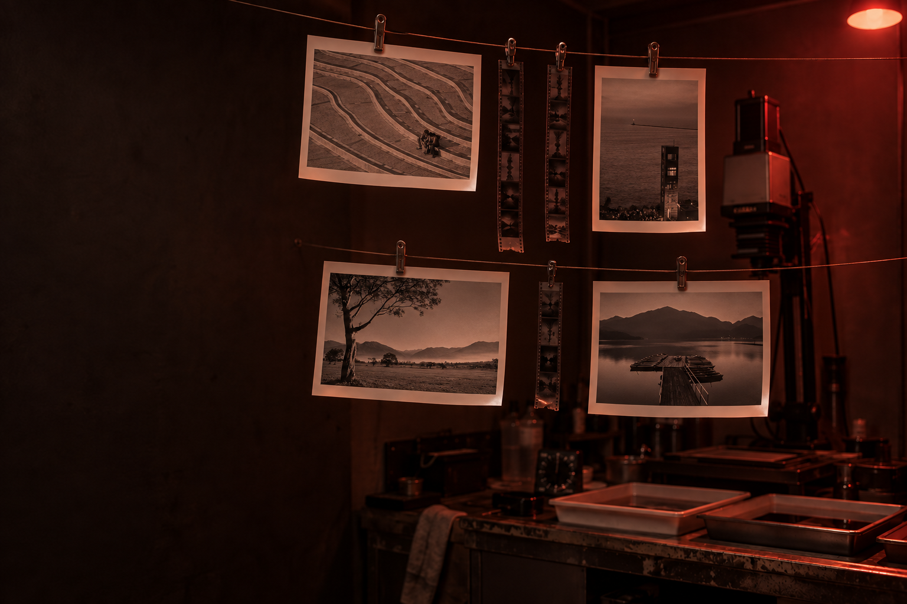

銀 · Silver halide
銀塩 銀塩 · Gin-en · Silver Halide
正片掃描。底片的顆粒與光，銀鹽的溫度。 Scanned positives — film grain, light, the warmth of silver halide.
銀
GIN-EN · SILVER HALIDE · — 枚
以下這些，是從底片匣裡取出、對著光細看的正片——顆粒、暈光，與銀鹽在暗房裡慢慢顯影的溫度。點任一張，像在燈桌上檢視印樣般慢慢翻閱。